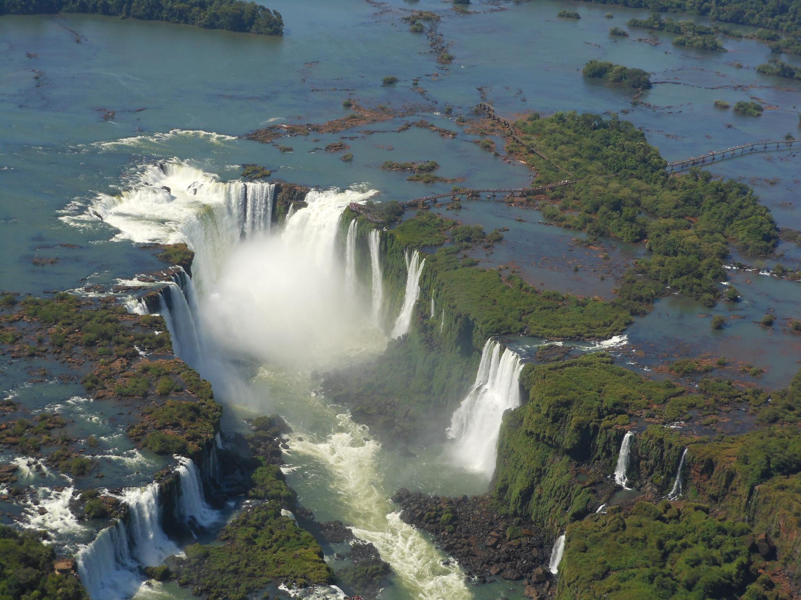
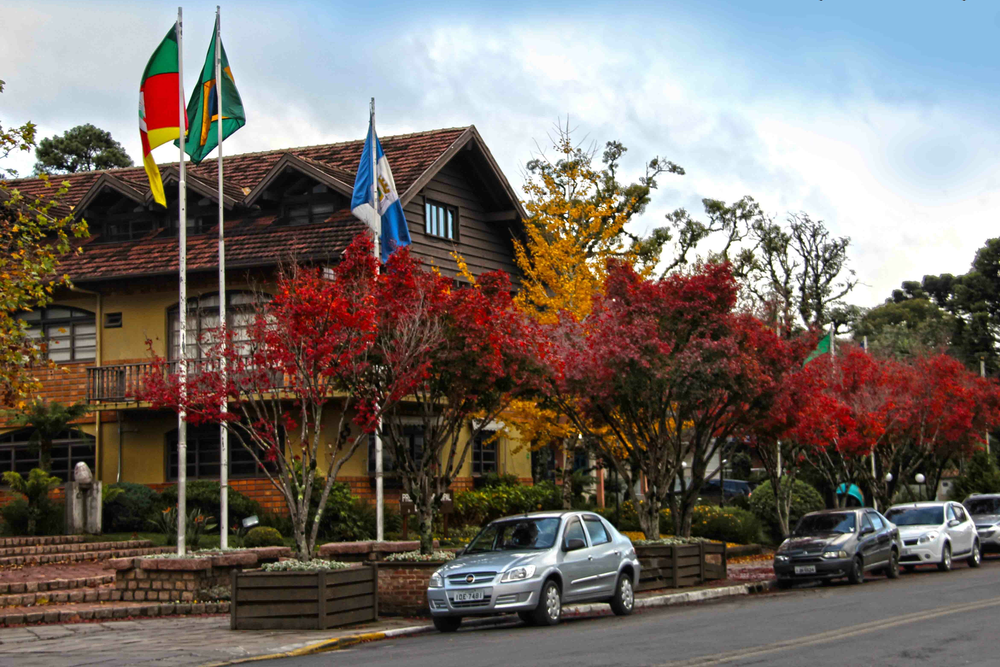
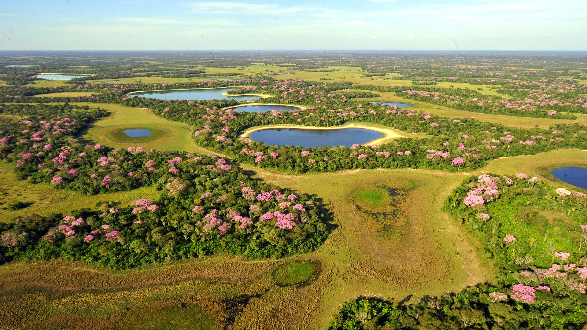
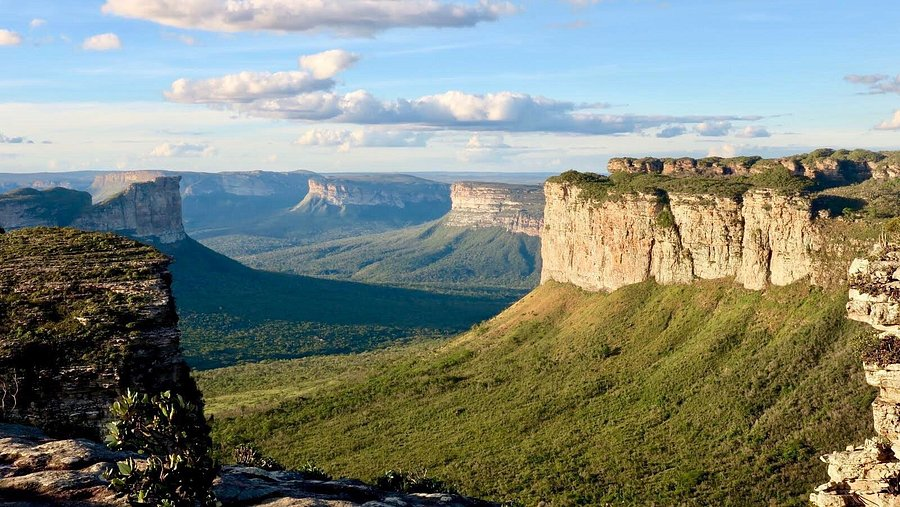

Destinos
Separamos alguns pontos turísticos ao redor do nosso Brasil que talvez desperte o interesse de conhecelos!
Cataratas do Iguaçu

As Cataratas do Iguaçu são um conjunto de 275 quedas d’água do rio Iguaçu, na fronteira entre o Brasil e a Argentina. Localizadas no Parque Nacional do Iguaçu, formam uma das paisagens naturais mais emblemáticas do planeta e atraem milhões de visitantes anualmente.
Foram reconhecidas como Patrimônio Mundial Natural pela UNESCO e eleitas uma das Sete Maravilhas da Natureza em 2011.
Gramado

Gramado é localizada na Serra Gaúcha, no estado do Rio Grande do Sul, Brasil. Conhecida por sua arquitetura de inspiração europeia e clima frio, é um dos destinos mais visitados do país, especialmente durante o inverno e o Natal.
Famosa por eventos como o "Natal Luz de Gramado", com espetáculos e decoração natalina. Entre as atrações populares estão o Lago Negro, a Rua Coberta, o Mini Mundo e parques temáticos como o Snowland.
Pantanal

O Pantanal é a maior planície alagável contínua do planeta, reconhecido pela UNESCO como Patrimônio Mundial e Reserva da Biosfera, por sua beleza cênica e importância ecológica ímpar.
O Pantanal funciona como um imenso delta interior, onde rios como o Cuiabá e o Paraguai transbordam na estação chuvosa (outubro – abril) e recuam lentamente na seca. Esse “pulso das águas” mantém mosaicos de florestas sazonais, campos e lagoas.
Abriga cerca de 80 espécies de mamíferos, 650 de aves, 50 de répteis e 300 de peixes.
Rua do Porto

A Rua do Porto é uma área turística tradicional localizada às margens do rio Piracicaba, na cidade de Piracicaba.
Conhecida por sua forte ligação com a cultura ribeirinha, gastronomia e lazer, é um dos principais cartões-postais da cidade e destino constante de visitantes.
A rua é famosa pelos restaurantes especializados em peixes de água doce, como pintado e pacu, preparados na brasa ou fritos. Além da culinária, o visitante encontra feiras de artesanato, apresentações musicais e espaços dedicados à história local, como o Casarão do Turismo, que oferece informações e exposições sobre Piracicaba e sua cultura ribeirinha.
Chapada Diamantina

Localizado no coração da Bahia, o Parque Nacional da Chapada Diamantina é uma das áreas naturais mais impressionantes do Brasil, reconhecido por sua biodiversidade, paisagens montanhosas e formações geológicas únicas.
A Chapada Diamantina forma um maciço pertencente à Serra do Sincorá, parte do sistema Espinhaço. A diversidade ecológica inclui Cerrado, Caatinga e Mata Atlântica, abrigando bromélias, orquídeas e a flor símbolo sempre-viva. Nascem ali rios fundamentais da Bahia, como o Paraguaçu e o Rio de Contas, que esculpem vales e cânions profundos.
O principal portal de entrada é a cidade de Lençóis, com aeroporto e ampla estrutura hoteleira. O parque oferece atividades como trekking, mountain bike, canoagem e escalada, sendo recomendado o acompanhamento de guias locais.